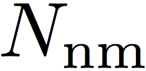
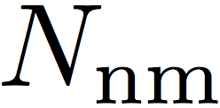
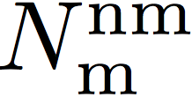
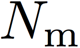
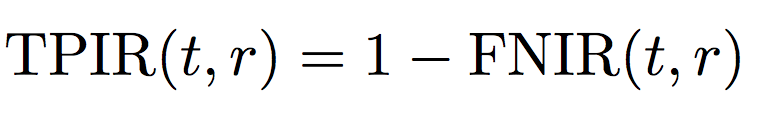
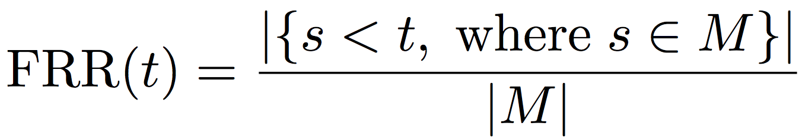
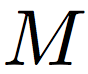

QMUL-SurvFace: Surveillance Face Recognition Challenge
Data Partition
The same data partition is used for both (I) Face Identification and (II) Face Verification challenges. Specifically, the 10,638 multi-shot identities (IDs) with 2 or more face images were divided randomly into two halves: one half (5,319) as the training data, the other half (5,319) as the test data. The remaining 4,935 single-shot IDs (totally 10,254) were used for model test. The data partition statistics are summarsied in the Table below.
| Split | All | Training Set | Testing Set |
|---|---|---|---|
| IDs | 15,573 | 5,319 | 10,254 |
| Images | 463,507 | 220,890 | 242,617 |
(I) Face Identification
In this challenge, an open-set face recognition protocol is adopted based on the consideration that in realistic surveillance applications, most faces captured by CCTV cameras are of non-target persons and therefore should be detected as non-interest. Specifically, a watch list identification scenario is defined by creating the probe and gallery sets as below: (1) 3,000 out of the 5,319 multi-shot test IDs were randomly selected. For each selected ID, half face images went into the gallery set, i.e. the watch list. (2) All the remaining images of 5,319 multi-shot IDs and all face images of 4,935 single-shot IDs were then used to form the probe set. In the open-set evaluation, two error types are considered.
The first type is false alarm – the system mistakenly recognises a non-target person as some target people in the gallery. This is quantified by the False Positive Identification Rate (FPIR):

which measures the proportion of nonmate searches  (i.e. no mate faces in the gallery) that produce
one or more gallery matching candidates at or above a threshold
t (i.e. false alarm), among a total of  nonmate
searches attempted.
(i.e. no mate faces in the gallery) that produce
one or more gallery matching candidates at or above a threshold
t (i.e. false alarm), among a total of  nonmate
searches attempted.
The second type of error is missing – the system mistakenly declines the ID of interest. This is quantified by the False Negative Identification Rate (FNIR):

which is the proportion of mate searches  (i.e. with mate faces present in the gallery) with enrolled gallery mate(s) found outside top r ranks or matching similarity score below the threshold t, among  mate searches.
A more intuitive measure may be the hit rate or True Positive Identification Rate (TPIR):

The TPIR@FPIR measurements are adopted as the open-set face identification performance metrics.
By varying the threashold t, TPIR@FPIR can be used to generate an ROC curve and the Area Under the Curve (AUC) can be then computed to measure an overall model performance.
(II) Face Verification
This challenge verifies whether a pair of face images describe the same ID or not. Similar to other existing benchmarks like LFW, the sets of matched and unmatched pairs were defined for algorithm performance evaluation. Specifically, for each of 5,319 test IDs, a matched pair and an unmatched pair were randomly generated. To measure the performance of testing algorithms on these matched and unmatched face image pairs, two types of error are considered.
The first one is false accept – the system wrongly claims a distractor as a target gallery ID. This is quatified by the False Accept Rate (FAR) which measures the fraction of unmatched pairs with the corresponding score s above a threshold t:

where  denotes the set of unmatched face image pairs.
denotes the set of unmatched face image pairs.
The second one is false reject – the system mistakenly declines the person of interest. This is quantified by the False Rejection Rate (FRR) which measures the fraction of matched pairs with matching score s below a threshold t:

where  is the set of matched face image pairs.
In the same spirit of TPIR, the True Accept Rate (TAR) can be further defined:

The TAR@FAR measurements are utilised for face verification evaluation. By varying the threashold t, TAR@FAR can similarly generate an ROC curve and enable to compute the AUC overall model performance.